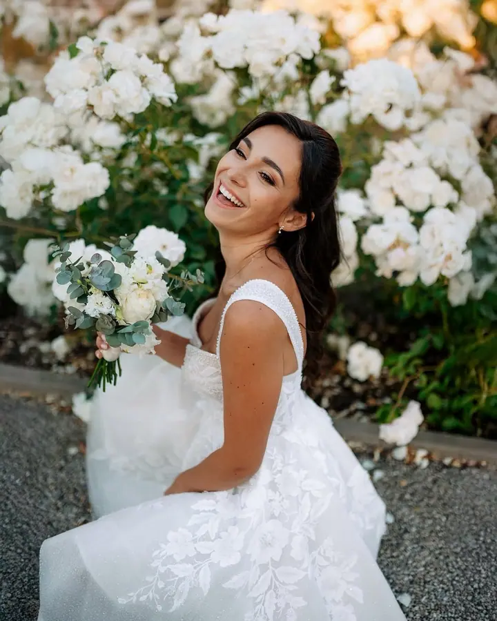
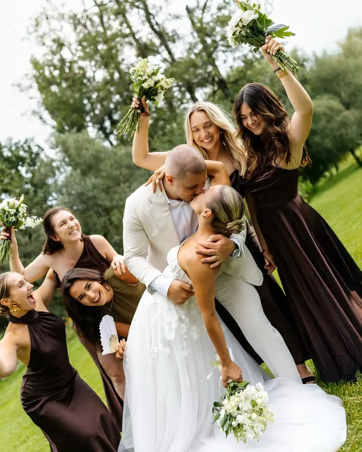
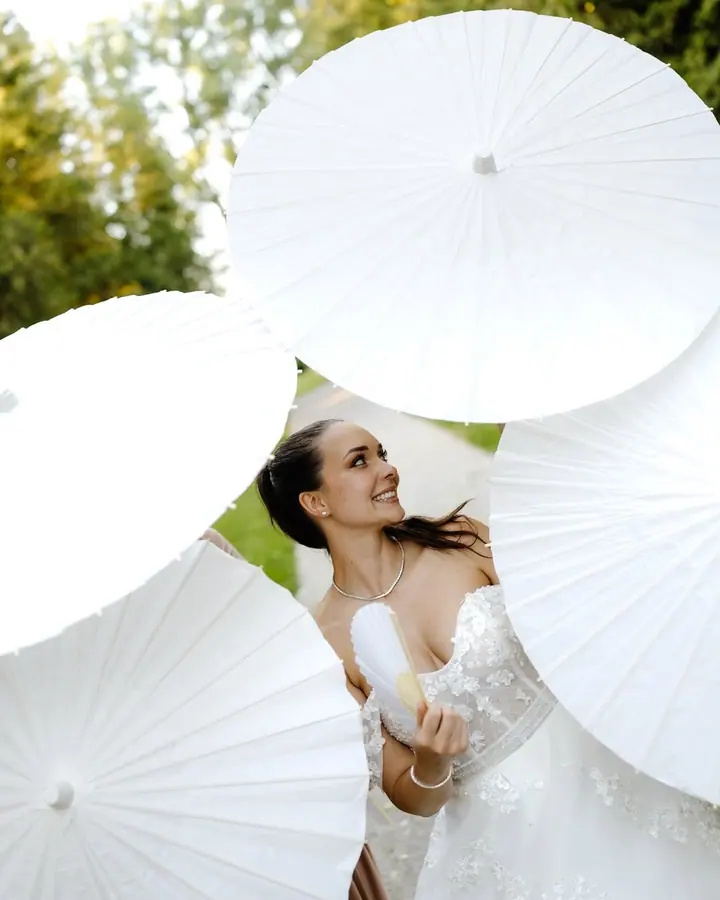

jedna
Svatební den
Zachytím váš svatební den takový, jaký je, a budu s vámi od příprav až po večerní párty. Snažím se naladit na stejnou notu a stát se součástí vašeho dne, aby vznikly momentky plné emocí.

Svatební a rodinný fotograf · Praha, Ústí nad Labem, celá ČR

Jmenuji se Lukáš a miluji pomocí fotek tvořit příběhy. Fotím svatby, páry a rodiny, nejraději venku v přírodě, a v Ústí nad Labem mám vlastní ateliér HLight Studio.
Více o mně
Co fotím
jedna
Zachytím váš svatební den takový, jaký je, a budu s vámi od příprav až po večerní párty. Snažím se naladit na stejnou notu a stát se součástí vašeho dne, aby vznikly momentky plné emocí.
dvě
Pohodová procházka v přírodě, během které zachytím přirozené momentky plné lásky a emocí. Ke každému focení si můžete nechat natočit i krátké Lovestory video.
tři
Párové, rodinné, těhotenské i newborn focení v mém ateliéru HLight Studio v Ústí nad Labem. Ateliér vám dá komfortní zázemí a uvolněnou atmosféru, před Vánoci tu fotím i vánoční focení.
Rodinné focení formou procházky v přírodě, nebo v pohodlí vašeho domova. Vytvořím příjemné prostředí, ve kterém vznikají přirozené momentky.
Je to vzpomínka na celý život.
Za objektivem
Nejšťastnější jsem v přírodě, kde také trávím nejvíc času, ať už s vámi a s foťákem v ruce, nebo když pobíhám po horách. Bydlím kousek od Krušných hor, které jsou mým nejoblíbenějším místem pro focení, a mám to tu opravdu rád.
Zároveň mě baví objevovat nová místa a hledat v nich inspiraci, takže za vámi rád dojedu kamkoliv, do Prahy i na druhý konec republiky. Miluji focení, sport a dobrou kávu. Inspiraci nacházím v přírodě i v nových zážitcích a to se odráží i v mé tvorbě.
Kromě focení venku mám k dispozici vlastní ateliér v Ústí nad Labem, HLight Studio. Vznikají v něm párové, rodinné, těhotenské i newborn fotografie v klidném a příjemném prostředí.
Lukáš
Pošlete mi datum a místo vaší svatby. Teď přijímám rezervace na svatby v letech 2027 a 2028.
Společně probereme průběh dne, místa a detaily, aby nás v den svatby nic nepřekvapilo. Můžete si přidat i předsvatební focení.
Budu s vámi od příprav až po večerní párty. Splynu s vaší svatbou a zachytím celý váš příběh.
Upravené fotografie dostanete ve vlastní online galerii. Z celodenního focení je jich zhruba 700.
Portfolio
Otázky
Celodenní svatební focení stojí 25 000 Kč, s předsvatebním focením 27 000 Kč. Varianta s videem v délce 4 až 7 minut vychází na 45 000 Kč.
Ano, rád dojedu kamkoliv. Doprava do 100 km je zdarma, nad 100 km účtuji 5 Kč za kilometr.
Ze svatby zhruba 700 upravených fotek, z hodinového focení v přírodě 30 až 40 a z focení v ateliéru 20. Každou další fotku z ateliéru si můžete dokoupit za 200 Kč.
Ano. Ke svatbě si můžete přidat videozáznam a ke každému focení v přírodě krátké Lovestory video za 2 000 Kč.
Napište pár vět o tom, co si představujete. lukas.vavrinec@seznam.cz